Meridian Hydrographic — mark, type, 32 icons — 15 screenshots
Every screenshot this task has committed, with the numbers the audit ran on it.
These are the same files the gallery thumbnail is taken from. Generated by
tools/shotsindex.mjs from tools/work/shoot/06-identity.json, the report the last complete
node tools/shoot.mjs 06-identity run wrote. Edit the manifest, not this page.
the task · the gallery
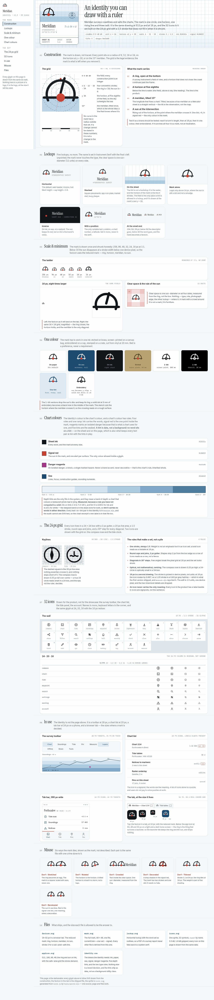
full — index.html at 1440 px viewport, whole page, 847 KB.
console0contrast2unnamed controls0img without alt0landmarks header+nav
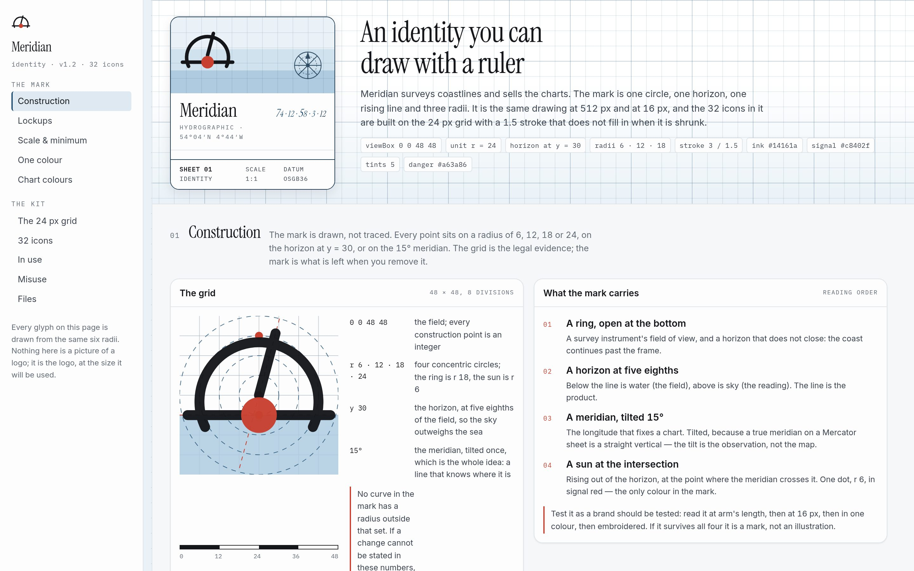
masthead — index.html at 1440 px viewport, 432 KB.
console0contrast2unnamed controls0img without alt0landmarks header+nav
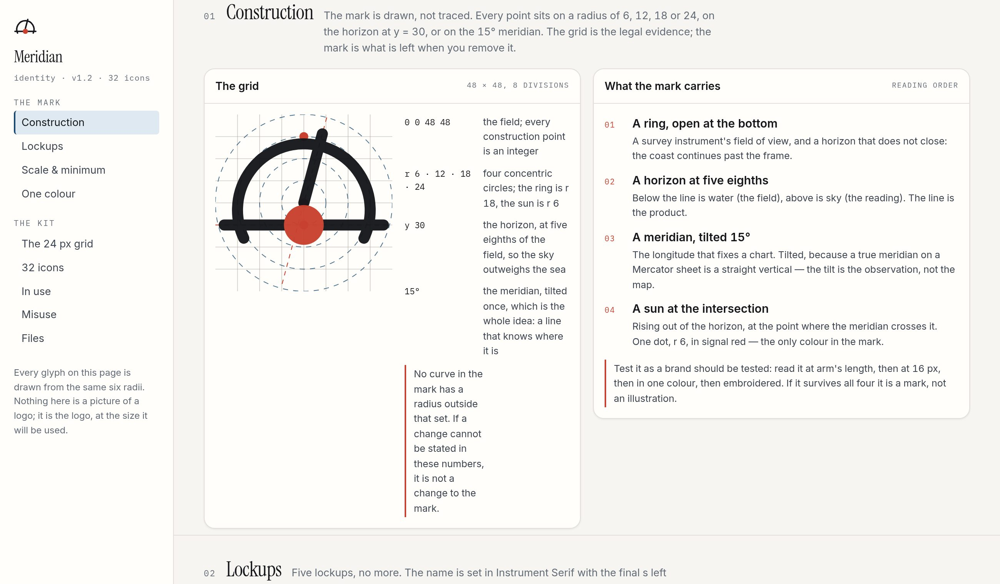
construction — index.html at 1300 px viewport, 276 KB.
console0contrast0unnamed controls0img without alt0landmarks header+nav
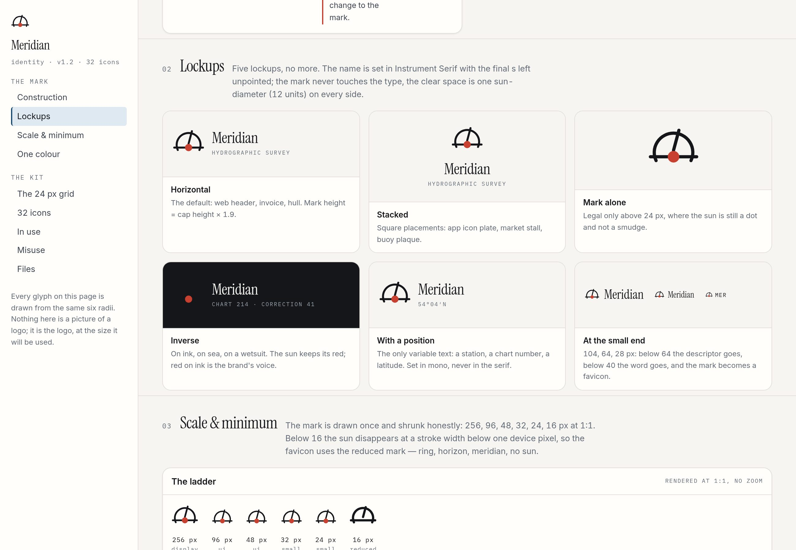
lockups — index.html at 1300 px viewport, 270 KB.
console0contrast2unnamed controls0img without alt0landmarks header+nav
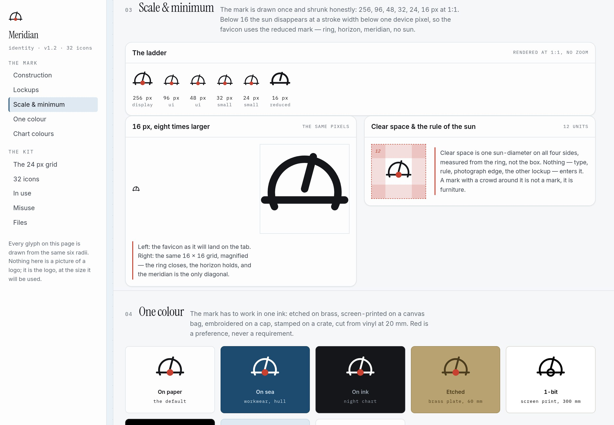
scale — index.html at 1300 px viewport, 277 KB.
console0contrast2unnamed controls0img without alt0landmarks header+nav
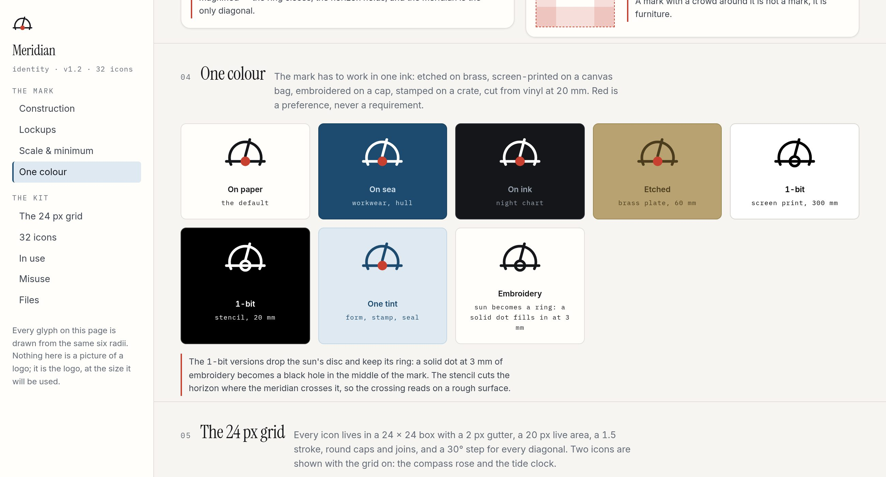
onebit — index.html at 1300 px viewport, 238 KB.
console0contrast2unnamed controls0img without alt0landmarks header+nav
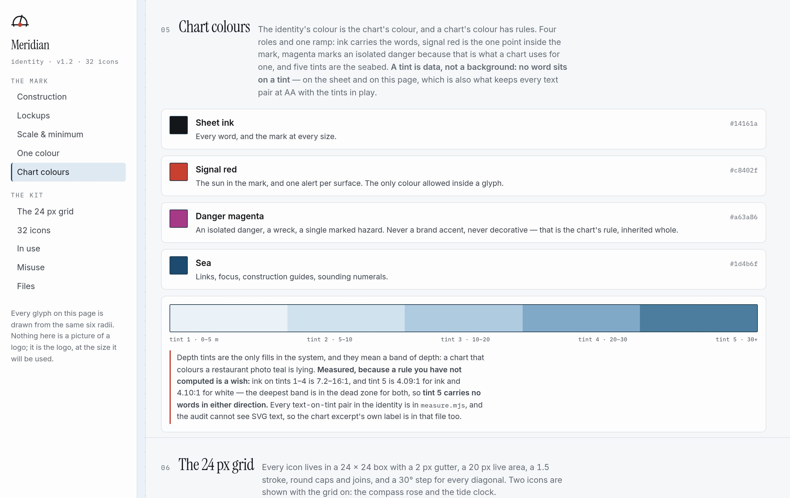
tints — index.html at 1300 px viewport, 298 KB.
console0contrast0unnamed controls0img without alt0landmarks header+nav
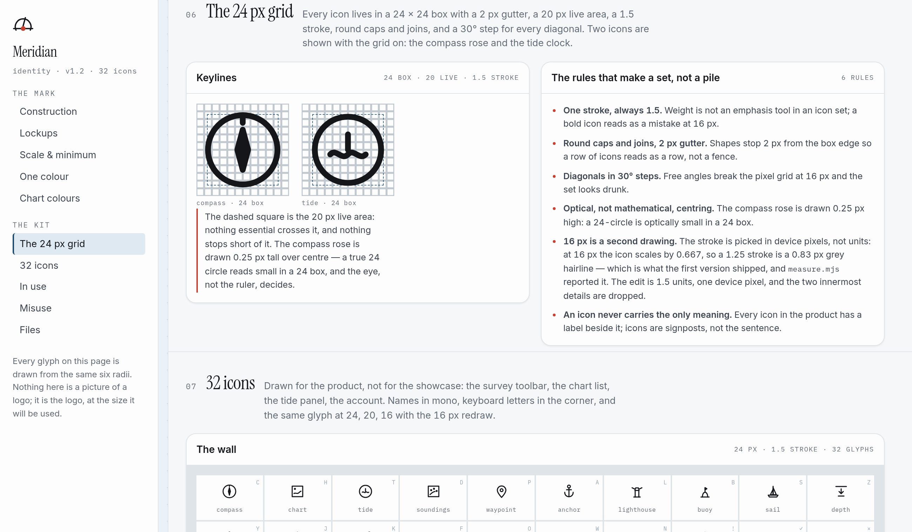
grid — index.html at 1300 px viewport, 336 KB.
console0contrast0unnamed controls0img without alt0landmarks header+nav
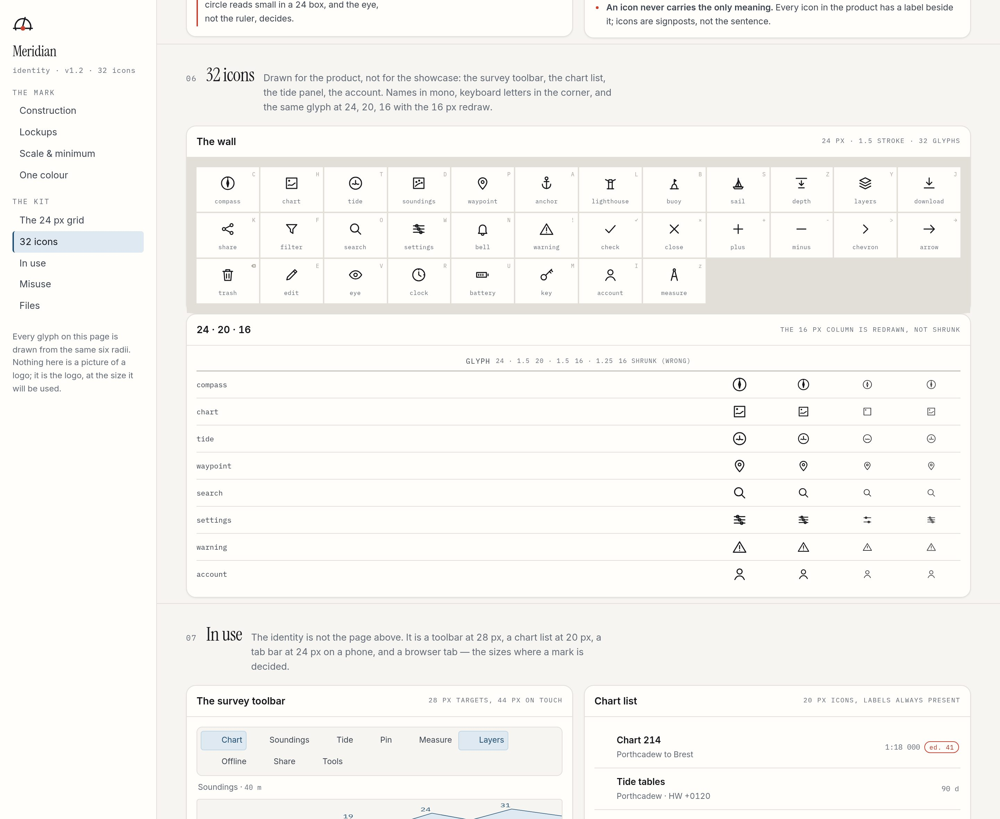
wall — index.html at 1440 px viewport, 322 KB.
console0contrast0unnamed controls0img without alt0landmarks header+nav
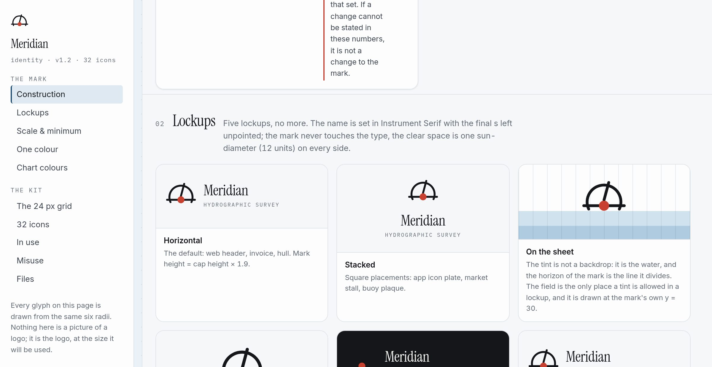
sizes — index.html at 1200 px viewport, 176 KB.
console0contrast0unnamed controls0img without alt0landmarks header+nav
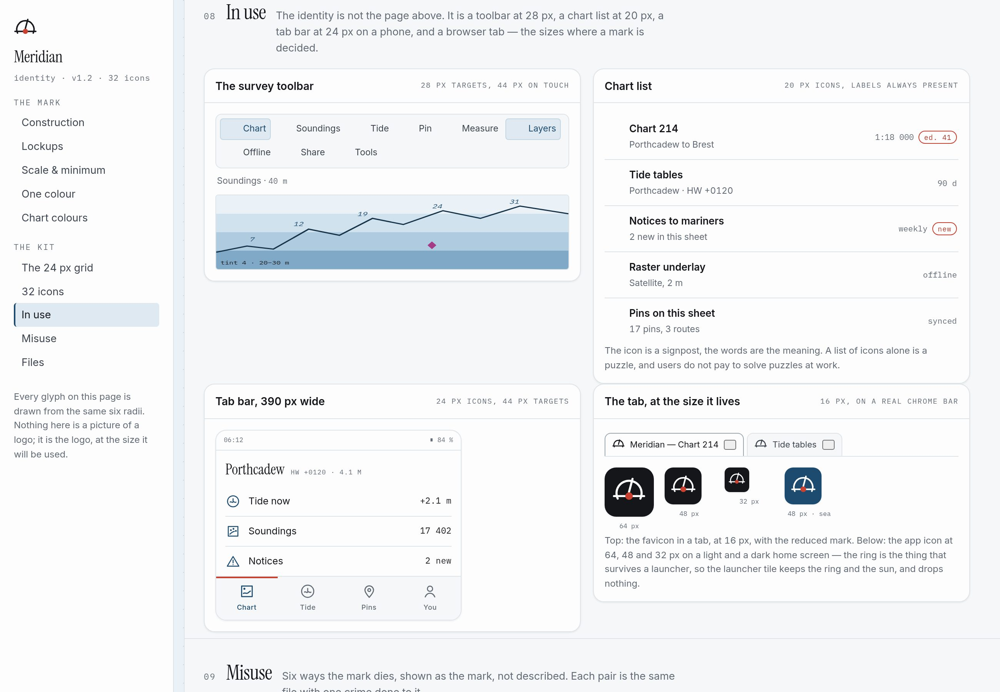
inuse — index.html at 1300 px viewport, 277 KB.
console0contrast0unnamed controls0img without alt0landmarks header+nav
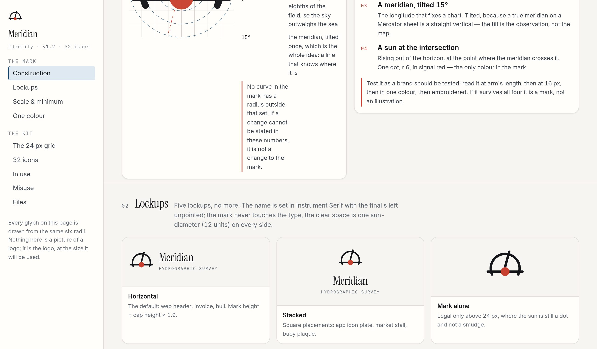
inuse-tabs — index.html at 1300 px viewport, 233 KB.
console0contrast2unnamed controls0img without alt0landmarks header+nav
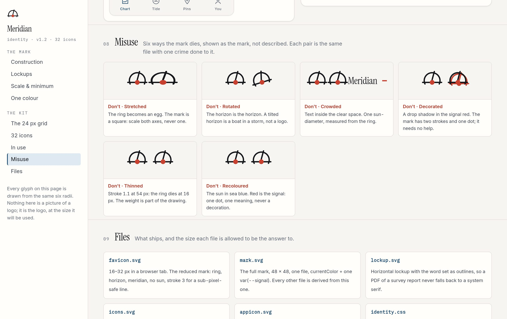
misuse — index.html at 1300 px viewport, 310 KB.
console0contrast0unnamed controls0img without alt0landmarks header+nav
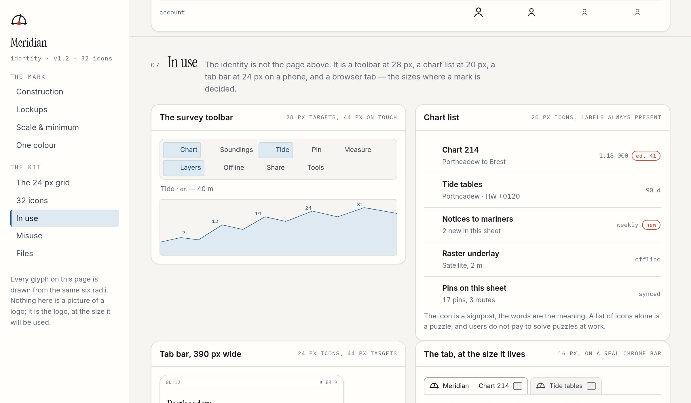
toolbar-on — index.html at 1200 px viewport, 216 KB.
console0contrast0unnamed controls0img without alt0landmarks header+nav
phone — index.html at 390 px viewport, whole page, 758 KB.
console0contrast0unnamed controls0img without alt0landmarks header+nav